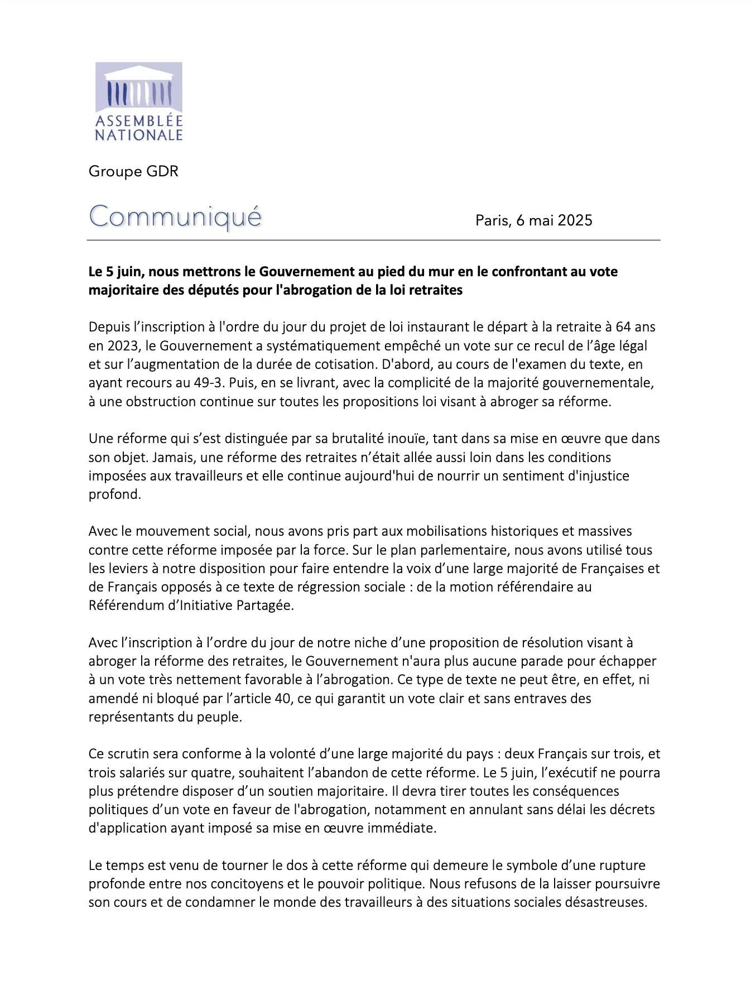

Publication relayée par le PCF 79
Les députés communistes annoncent un vote sur l’abrogation de la réforme des retraites
Date de mise à jour indiquée par Facebook · 6 mai 2025
Texte de la publication · Les députés communistes
Le 5 juin, dans le cadre de notre niche parlementaire, nous confronterons le Gouvernement au vote majoritaire des députés en faveur de l'abrogation de la loi retraites.
Il lui reviendra d'en tirer toutes les conséquences politiques, notamment en annulant les décrets ayant permis sa mise en œuvre immédiate.
Notre communiqué

Sources
Les députés communistes · publication relayée par le PCF 79 · bibliothèque Facebook · AR-0002-FB-01127
À lire aussi · Retraites. L’Assemblée adopte la résolution communiste du 5 juin